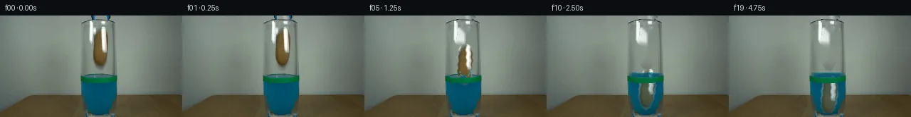
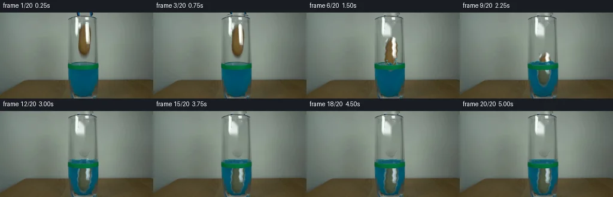
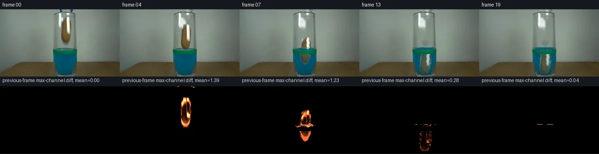

初版 V0
![]()
Observable Generation Trace
把最终像素视频、Harness 冻结的每轮候选、真实工具事件和 Agent 自述放在同一页。可观测证据与模型自述分开标记，避免把“模型说它检查过”误当成真实工具调用。
![首帧]()
Static locked-off single-shot with fixed frame throughout filmed with constant framerate in real-time. The scene shows a realistic scientific demonstration. The scene only contains the described setup and actions. The blue-black grabber tool was holding the potato at the inner rim of the glass containing the blue liquid and the green water level marking. The blue-black grabber releases the potato into the glass containing blue liquid with a green band marking the water level.
首帧显示在左侧播放器初始画面。Track 权限、隔离和 tensor 一致性来自 run manifest，而不是 METHOD.md。
上方并排显示初版和最终版，默认同步播放；下方每个版本可独立播放，也可勾选加入同步播放。仅检查图更新的连续重复快照已合并，回退旧视频仍保留为一次修订。
Observable events
来源：events.jsonl + run manifest
此 Track 禁止读取输出图片。逐轮预览由外部 Harness 自动冻结，只用于事后审计，生成 Agent 当时看不到这些页面。
Frozen candidates
每张图来自该 round 的真实 00 / 01 / 05 / 10 / 19 帧
pixels 89a644e8abeeb2ce · code b57f03be45c677f2
--- previous/generate.py +++ current/generate.py @@ -0,0 +1,249 @@ +from pathlib import Path + +import cv2 +import numpy as np +from PIL import Image, ImageDraw + +from artifact_io import save + + +ROOT = Path(__file__).resolve().parent +W, H = 256, 144 + + +def composite(dst, src, alpha): + """Alpha composite uint8 RGB src over dst; alpha is float HxW.""" + a = np.clip(alpha, 0.0, 1.0)[..., None] + return np.clip(dst.astype(np.float32) * (1.0 - a) + src.astype(np.float32) * a, 0, 255).astype(np.uint8) + + +def polygon_alpha(points, blur=0.8): + mask = np.zeros((H, W), np.uint8) + cv2.fillPoly(mask, [np.asarray(points, np.int32)], 255) + if blur: + mask = cv2.GaussianBlur(mask, (0, 0), blur) + return mask.astype(np.float32) / 255.0 + + +def glass_inside_mask(): + """Conservative mask that remains inside the photographed tumbler walls.""" + mask = np.zeros((H, W), np.uint8) + pts = np.array([ + [118, 9], [160, 9], [162, 86], [161, 111], [158, 136], + [153, 140], [123, 140], [118, 136], [115, 111], [116, 86] + ], np.int32) + cv2.fillPoly(mask, [pts], 255) + return mask.astype(np.float32) / 255.0 + + +def transform_layer(src_rgb, src_alpha, dy, angle, phase): + """Rotate/translate the source potato and add tiny scan-line refraction.""" + m = cv2.getRotationMatrix2D((141.0, 45.0), angle, 1.0) + m[1, 2] += dy + rgb = cv2.warpAffine(src_rgb, m, (W, H), flags=cv2.INTER_CUBIC, + borderMode=cv2.BORDER_REFLECT_101) + alpha = cv2.warpAffine(src_alpha, m, (W, H), flags=cv2.INTER_LINEAR, + borderMode=cv2.BORDER_CONSTANT) + if dy >= 20: + yy, xx = np.mgrid[0:H, 0:W].astype(np.float32) + shift = 0.52 * np.sin(yy * 0.61 + phase) + map_x = xx + shift + rgb = cv2.remap(rgb, map_x, yy, cv2.INTER_LINEAR, borderMode=cv2.BORDER_REFLECT_101) + alpha = cv2.remap(alpha, map_x, yy, cv2.INTER_LINEAR, borderMode=cv2.BORDER_CONSTANT) + return rgb, np.clip(alpha, 0.0, 1.0) + + +def add_water_and_surface(frame, object_alpha, t, level, wave_amp, inside, source): + yy, xx = np.mgrid[0:H, 0:W] + # Two damped modes keep the water edge organic but spatially confined. + wave = wave_amp * (0.68 * np.sin((xx - 116) * 0.29 + t * 0.91) + + 0.32 * np.sin((xx - 116) * 0.57 - t * 0.46)) + surface = level + wave + water = (yy >= surface) & (inside > 0.5) & (yy <= 139) + + # Reuse the source liquid's horizontal optical gradient. + row = source[98].astype(np.float32) + liquid = np.repeat(row[None, :, :], H, axis=0) + depth = np.clip((yy - surface) / 55.0, 0, 1) + liquid[:, :, 0] *= 0.68 + liquid[:, :, 1] = liquid[:, :, 1] * (1.01 - 0.08 * depth) + 5 + liquid[:, :, 2] = liquid[:, :, 2] * (1.04 - 0.10 * depth) + 4 + liquid = np.clip(liquid, 0, 255).astype(np.uint8) + + # Newly raised water is opaque enough to read as volume; elsewhere only the + # moving potato receives added underwater tint, preserving source texture. + raised = water & (yy < 96) + frame = composite(frame, liquid, raised.astype(np.float32) * 0.78) + submerged_object = water.astype(np.float32) * object_alpha + frame = composite(frame, liquid, submerged_object * 0.30) + + # A one-pixel refractive edge follows the actual oscillating surface. + overlay = frame.copy() + pts = [] + for x in range(118, 161): + y = int(round(surface[min(143, max(0, level)), x])) if False else int(round(level + wave[level, x])) + if 0 <= y < H: + pts.append([x, y]) + if len(pts) > 1: … diff truncated; 162 more lines …

pixels 7da48ed02be6b68d · code e82047c8cbbf59d8
--- previous/generate.py
+++ current/generate.py
@@ -81,7 +81,7 @@
overlay = frame.copy()
pts = []
for x in range(118, 161):
- y = int(round(surface[min(143, max(0, level)), x])) if False else int(round(level + wave[level, x]))
+ y = int(round(level + wave[level, x]))
if 0 <= y < H:
pts.append([x, y])
if len(pts) > 1:
@@ -223,7 +223,10 @@
frames = [source.copy()]
for t in range(1, 20):
frame = clean.copy()
- potato_rgb, pa = transform_layer(source, potato_alpha, offsets[t], angles[t], t * 0.73)
+ # Water refraction moves while the potato travels, then becomes fixed as
+ # the damped bottom-contact motion resolves.
+ refract_phase = min(t, 16) * 0.73
+ potato_rgb, pa = transform_layer(source, potato_alpha, offsets[t], angles[t], refract_phase)
pa *= inside
frame = composite(frame, potato_rgb, pa)
pixels 7da48ed02be6b68d · code e82047c8cbbf59d8
No generate.py text change in this frozen round.
Final visual checks
Harness 保存的最终产物


Agent claims
以下文字由生成 Agent 撰写，不等同于工具证据
The grabber releases the potato. Gravity accelerates it through the short air gap; it crosses the marked surface, makes a small contained splash and ripples, then sinks because its effective density is greater than the liquid. As more potato volume becomes submerged, the actual blue liquid surface rises above the fixed green band. Drag slows the descent. The potato reaches the glass bottom, makes a small damped rebound/tilt, and settles while bubbles and surface ripples fade. The grabber opens and withdraws vertically out of frame.
| Frame | Time | Planned visible event |
|---|---|---|
| 00 | 0.00 s | Exact source frame: grabber holds potato at the inner rim/marked surface. |
| 01 | 0.25 s | Prongs spread slightly; potato is just released, with essentially no displacement yet. |
| 02 | 0.50 s | Potato begins free fall; grabber starts retracting upward. |
| 03 | 0.75 s | Potato descends faster toward the liquid; open prongs are higher. |
| 04 | 1.00 s | Lower tip touches/crosses the surface; first narrow ripple; tool nearly gone. |
| 05 | 1.25 s | Potato enters the liquid; small symmetric splash peaks and surface depression. |
| 06 | 1.50 s | More than half submerged; surface rises; splash collapses into ripples. |
| 07 | 1.75 s | Fully submerged just below the green marker; blue tint/refraction appears over potato. |
| 08 | 2.00 s | Potato sinks; two tiny bubbles trail upward; raised surface oscillates. |
| 09 | 2.25 s | Continued descent with liquid drag; slight clockwise tilt develops. |
| 10 | 2.50 s | Potato passes mid-liquid; ripple amplitude and bubbles diminish. |
| 11 | 2.75 s | Slower sinking toward the tapered lower glass. |
| 12 | 3.00 s | Potato approaches the base with a small remaining bubble trail. |
| 13 | 3.25 s | First bottom contact; descent stops and the potato compresses/tilts perceptibly. |
| 14 | 3.50 s | Very small damped rebound from the base. |
| 15 | 3.75 s | Potato returns downward and leans against the lower glass. |
| 16 | 4.00 s | Settling motion becomes subpixel/single-pixel scale. |
| 17 | 4.25 s | Potato rests at bottom; raised surface nearly level. |
| 18 | 4.50 s | Only a faint residual surface ripple remains. |
| 19 | 4.75 s | Stable final state: tool absent, potato settled underwater, blue level visibly above the fixed green mark. |
first_frame.png.This continuation is generated deterministically with local Python, NumPy, Pillow, and OpenCV pixel operations. No external engine, model, reference image, mask, or network resource is used.
first_frame.png is loaded as RGB. Frame 00 is retained as an exact array copy.artifact_io.save writes the packed 0xRRGGBB tensor, the 20 PNGs, inspection contact sheet, and standalone HTML player. transition_check.png pairs selected frames with numeric previous-frame difference heatmaps for continuity checking.All motion and fluid effects are analytic/local pixel compositing. Later outputs are validated by array dimensions, packed-tensor equality, frame-zero equality, change localization, and transition statistics rather than image viewing.